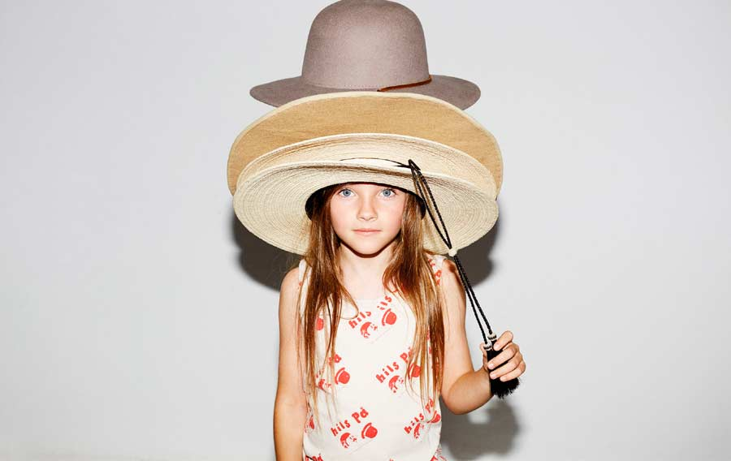

Laia Aguilar, everything she touches turns to gold
Laia Aguilar has reached that point that we, as mums, aim for when it comes to dressing our children. The Catalonian born former founder and creative director of BOBO CHOSES has now joined forces with Jan Andreu, and model and fashion designer Vanesa Lorenzo, to launch their own brand THE ANIMALS OBSERVATORY.
The mum of two, who started to take interest in Kids’ Fashion after her first child was born, finds inspiration in a variety of sources, from Jacques Tati’s films to African motifs found in vintage match boxes.
The Animals Observatory SS16 Collection has exceeded all expectations by creating a timeless yet eclectic range of clothes. Each piece of clothing tells a different story aimed at the children as individuals and allows them to develop their imagination and emotions, among other skills.

COLOURS
A neutral colour palette throughout the collection is visibly present, but to make it even more desirable bright tones finish the work, making it more fun. Bright reds, lively yellows, ocean blues, military and emerald greens, trendy mustard… you name it, it’s there!
{kind=link}
PRINTS
The prints take shape in the form of different characters, like cowboy faces, toad eyes, pipes, and animals, all drawn from the eyes of the little ones. Traditional stripes are also present in some of the garments.
{kind=link}
The majority of the collection is unisex, so there shouldn’t be a problem whether you have one of each, two of the same, or more! We personally think these little girls look so cute and quirky in those comfy trousers and sweatshirts.
{kind=link}
Don’t worry if you have a girly girl, I do! The TAO dresses and skirts are to die for, and such a delicate detail like a balloon sleeve can transform any t-shirt into something that your little princess will love.
{kind=link}
KNITS
We can’t miss mentioning the knits for this season’s collection. There are no words to describe how lovely these garments are. They are so seventies I feel like singing ‘Dancing Queen’ out loud! Lovely rompers for babies with the most amazing designs, jumpers and shorts for the older kids. A win-win situation for the whole family.
{kind=link}
What else is there to say about the first SS16 collection from TAO? We could go on and on about the amazing creativity of this brand. The Animals Observatory SS16 collection, captures the freshness of the spring and summer seasons so perfectly we can almost smell it! A truly inspirational project that I feel it has transmitted Laia’s philosophy of life “Be a true animal, true to your instinct”.
Click here to find out more www.theanimalsobservatory.com
+ There are no comments
Add yours